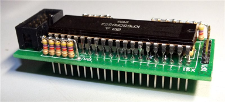

www.spetsialist-mx.ru
САЙТ О ПК "СПЕЦИАЛИСТ" И ЕГО КЛОНАХ
| |
|
| ГЛАВНАЯ | |
| МИКРОПРОЦЕССОР | |
| СИНХРОГЕНЕРАТОР | |
| ПАМЯТЬ | |
| ИНТЕРФЕЙС | |
| КЛОНЫ | |
| ПРОГРАММЫ | |
| ИГРЫ | |
| СПЕЦИАЛИСТ МХ | |
| ПЛИС | |
| ССЫЛКИ | |
| ОБРАТНАЯ СВЯЗЬ |
ИНТЕРФЕЙС
Для упрощения конструкции интерфейс (К580ВВ55) и внешнее устройство адресуются как ячейки памяти. Интерфейсный адаптер DD44, помимо обслуживания клавиатуры, выработки звуковых сигналов, которые с вывода 6 DD45.3 поступают на УЗЧ телевизора, и связи с магнитофоном, обеспечивает работу узла начального пуска (НП). Клавиатура состоит из матрицы нормально разомкнутых контактов. Все функции клавиатуры (сканирование матрицы, защита от дребезга, формирование кодов символов и так далее) реализованы программно. Также программным способом осуществляется связь с магнитофоном и генерация звукового сигнала.
Условием надежной работы любой ПЭВМ, использующей в качестве накопителя бытовой кассетный магнитофон, является чёткая, без сбоев, запись и считывание данных с магнитной ленты. А поскольку компьютер "Специалист" представляет собой цифровую схему, на вход магнитофона с неё проникают импульсные помехи, искажающие записываемую информацию. Чтобы снизить их уровень, информационный сигнал с вывода 8 DD45 уменьшают в 15...20 раз с помощью делителя на резисторах R40, R41.
Более жёсткие требования предъявляют к процессу считывания с магнитной ленты. Сделать его стабильным поможет, во - первых, дополнительное согласование выходных сигналов операционного усилителя (ОУ) К140УД6 с логическими ТТЛ - уровнями порта ввода - вывода посредством специального каскада на транзистое VT2, во - вторых, введение гистерезиса для ОУ DA1 К140УД6, выполняющего функции компаратора напряжения. В процессе его работы гистерезис подбирают с помощью резистора R44 до получения на коллекторе VT2 прямоугольных импульсов, свободных от помех по фронтам и срезам.
ПЭВМ "Специалист" позволяет работать со звуковыми программами. В схеме установлен на выходе усилитель на транзисторе VT1. В качестве нагрузки можно использовать любой "динамик" от карманного радиоприёмника.
Ниже, в таблице расписаны порты ППА и внешний вид плёночной клавиатуры Анатолия Федоровича Волкова в самом первом "Специалисте".
Вывод порта |
Назначение |
Устройство |
Контроллер цвета |
PA7 |
5-й столбец
|
Клавиатура |
- |
PA6 |
6-й столбец
|
Клавиатура |
- |
PA5 |
7-й столбец
|
Клавиатура |
- |
PA4 |
8-й столбец
|
Клавиатура |
- |
PA3 |
9-й столбец
|
Клавиатура |
- |
PA2 |
10-й столбец
|
Клавиатура |
- |
PA1 |
11-й столбец
|
Клавиатура |
- |
PA0 |
12-й столбец
|
Клавиатура |
- |
PB7 |
1-я строка
|
Клавиатура |
- |
PB6 |
2-я строка
|
Клавиатура |
- |
PB5 |
3-я строка
|
Клавиатура |
- |
PB4 |
4-я строка
|
Клавиатура |
- |
PB3 |
5-я строка
|
Клавиатура |
- |
PB2 |
6-я строка
|
Клавиатура |
- |
PB1 |
Клавиша "НР"
|
Клавиатура |
- |
PB0 |
Вход считывания
|
Магнитофон |
- |
PC7 |
Выход на запись
|
Магнитофон |
Выход сигнала красного цвета |
PC6 |
-
|
- |
Выход сигнала зелёного цвета |
PC5 |
Выход звука
|
Усилитель |
- |
PC4 |
Начальный пуск
|
- |
Выход сигнала синего цвета |
PC3 |
1-й столбец
|
Клавиатура |
- |
PC2 |
2-й столбец
|
Клавиатура |
- |
PC1 |
3-й столбец
|
Клавиатура |
- |
PC0 |
4-й столбец
|
Клавиатура |
- |
ИНТЕРФЕЙСНЫЙ АДАПТЕР К580ВВ55
_
Программируемое устройство ввода - вывода параллельной информации К580ВВ55 изготавливают по п - МДП технологии.
При обмене информацией между периферийными устройствами и центральным процессором используют каналы A, B, C, подключаемые к внешним устройствам, и двунаправленный буферный регистр данных, подключаемый к магистрали данных центрального процессора. Каналы A и B имеют входные и выходные формирователи для выдачи и приёма информации от внешней линии. С внутренней магистралью канал А связан через два восьмиразрядных регистра, а канал В - через один восьмиразрядный регистр ввода - вывода. Канал С состоит из двух четырёхразрядных подканалов. Каждый их подканалов имеет входной и выходной формирователь и регистр, связанный с внутренней магистралью.
Команды от центрального процессора поступают через буферный регистр данных. Узел выбора канала формирует сигналы управления передачей данных.
Обмен информацией между центральным процессором и периферийными устройствами может происходить по командам ввода - вывода микропроцессора или с управлением от периферийного устройства прерывания "вопрос - ответ".
Режим работы задают специальной командой путём посылки кода в регистр управляющего слова до начала основной операции по вводу и выводу информации. Для изменения режима в регистр управляющего слова заносится данный код. БИС может работать в трёх режимах:
а) режим 0 - это основной режим, в нём могут работать все три канала, причём оба подканала работают как единый восьмиразрядный канал;
б) режим 1, в котором могут работать каналы А и В. Подканалы используют для передачи управляющих сигналов;
в) режим 2 - в нём может работать только канал А, который подключает периферийное устройство с двунаправленной магистралью, по одной идёт ввод и вывод информации. Подканалы используются для передачи управляющих сигналов.
D0...D7 - шина данных - предназначена для выдачи и приёма данных, а также для передачи управляющих слов и словосостояний между БИС и центральным процессором;
A0, A1 - адресная шина - выводы узла выбор канала - входы сигналов, используемых для выбора каналов;
RES - сброс - вход сигнала, устанавливающего БИС в исходное положение;
PA0...PA1 - шина ввода - вывода канала А - предназначена для обмена информацией между БИС и внешним устройством;
PB0...PB1 - шина ввода - вывода канала В - предназначена для обмена информацией между БИС и внешним устройством;
PC0...PC1 - шина ввода - вывода канала С - предназначена для обмена данными и управляющими сигналамии между БИС и внешним устройством;
/RD - чтение - вход сигнала разрешения передачи информации из интерфейса в шину данных центрального процессора;
/WR - запись - вход сигнала разрешения передачи информации из шины данных центрального процессора в интерфейс;
/CS - выбор устройства - вход сигнала выбора БИС;
VCC - питание +5 В;
GND - общий провод.
АДАПТЕР PS/2 КЛАВИАТУРЫ
Контроллер от Vinxru позволяет подключить PS/2 клавиатуру к "Специалисту". Поддерживается 2 раскладки (обычно это QWERTY и ЙЦУКЕН), которые переключаются клавишей Scroll Lock. Поддерживаются два режима работы: стандартный Специалист и Специалист_MX. У этих компьютеров отличаются коды некоторых клавиш. В режиме Специалист_MX происходит замена кодов клавиш (ESC 06H -> 5DH, TAB 07H -> 03H, F1 5DH -> 5CH, F2 5CH -> 59H, F3..F11 51H ... 59H -> 50H ... 58H). Режимы переключаются клавишей Print Screen.
На клавиатуру так же можно вывести "Сброс". Но из - за нехватки выводов микроконтроллера, придётся отключить вывод PC6 / Reset, который и будет использоваться для сброса. Но при этом Вы теряете возможность перепрошивки! Этот контроллер может изменять привязку клавиш PS/2 к Специалисту во время работы. Для этого надо нажать на нужную клавишу и не отпуская её нажать Break. Потом отпустить обе клавиши. Светодиоды должны последовательно мигнуть. Затем набираете цифрами код клавиши Специалиста и нажимаете Enter.
Для прошивки микроконтроллера Atmega8 необходимо взять прошивку (см. ниже, в таблице) и выставить соответствующие фьюзы. Фьюз RSTDISBL разрешает использовать PC6 / Reset как ещё один порт ввода - вывода. Иногда нужная вещь, но нужно знать - после программирования RSTDISBL микроконтроллер уже нельзя будет прошить последовательным программатором! Поэтому без особой надобности не трогайте его (на картинке фьюзов для прошивки он не выставлен):
RSTDISBL = 1 – ножка сброса работает как сброс;
RSTDISBL = 0 – ножка сброса работает как ещё один порт ввода - вывода, последовательное программирование отключено.
В таблице есть ссылка на архив с гербер файлами для производства печатной платы от Fifana.
{kind=link}
_
_
_
_
| Название | Файл |
|---|---|
| Схема PS/2 адаптера | |
| Прошивка Atmega8 | |
| Фьюзы для прошивки Atmega8 | |
Фьюзы для прошивки Atmega8 |
|
| Гербер файлы PS/2 адаптера | |
| Исходники проекта PS/2 адаптера от Vinxru |
{kind=link}
{kind=link}
{kind=link}
КОНТРОЛЛЕР SD КАРТЫ
Контроллер от Vinxru содержит драйвер файловой системы FAT16 / FAT32. Он позволяет читать, записывать, создавать и удалять файлы / папки c SD - карты. Подключается контроллер к параллельному порту компьютера (КР580ВМ55А) по адресу F000H. Но могут быть варианты (например адрес может меняться). Все программы взаимодействуют через SD BIOS, который загружается с карты памяти в ОЗУ компьютера при включении. При изменении способа подключения перепрошивка контроллера или ПЗУ компьютера не требуется.
Программу начального запуска (загружающую файл boot / sdbios.rks в ОЗУ компьютера) можно прошить в ПЗУ компьютера. Но так же предусмотрен вариант запуска без изменения ПЗУ компьютера. В этом случае, сразу после перезагрузки компьютера, контроллер загружает маленькую программу через порт магнитофона (из файла boot / boot.rks). Для этого надо соединить контроллер и порт магнитофона проводом, а так же установить перемычку на плате. Эта маленькая программа загружает уже SD BIOS.
Для прошивки микроконтроллера Atmega8 необходимо взять прошивку (см. ниже, в таблице) и выставить соответствующие фьюзы. Программы работы с SD картой можно взять с сайта автора.
В таблице есть ссылка на архив с гербер файлами для производства печатной платы от Fifana.
{kind=link}
 _
_
_
_
| Название | Файл |
|---|---|
| Схема SD адаптера | |
| Прошивка Atmega8 | |
| Фьюзы для прошивки Atmega8 | |
Фьюзы для прошивки Atmega8 |
|
| Гербер файлы SD контроллера | |
| Исходники проекта PS/2 адаптера от Vinxru |